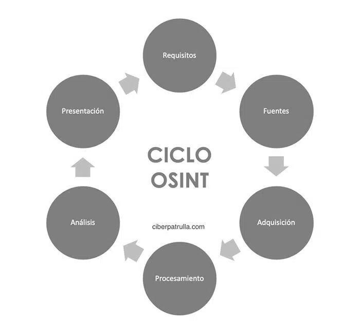

Explicación
Ciclo OSINT :

Ciberseguridad - OSINT :
La seguridad, incluyendo la ciberseguridad, se centra en prevenir y mitigar riesgos y amenazas de diversas naturalezas. El análisis de inteligencia y la prospectiva juegan un papel fundamental en este proceso, ya que ayudan a obtener información clave y a anticiparse a los riesgos antes de que ocurran.
Seguridad y Ciberseguridad: La seguridad se refiere a la protección de personas, activos, información y sistemas contra amenazas y riesgos. La ciberseguridad se enfoca específicamente en la protección de sistemas y datos digitales contra amenazas cibernéticas, como malware, ataques de hackers y otras actividades maliciosas en línea.
Análisis de Inteligencia: El análisis de inteligencia implica la recopilación, evaluación y análisis de información relevante y confiable para tomar decisiones informadas. Puede incluir información de fuentes abiertas, inteligencia de fuentes humanas, datos técnicos y más. En el contexto de la seguridad y la ciberseguridad, el análisis de inteligencia se utiliza para identificar amenazas emergentes, patrones de ataque y vulnerabilidades.
Prospectiva: La prospectiva es un enfoque que se centra en anticipar posibles escenarios futuros a partir de tendencias, datos históricos y análisis de inteligencia. En el ámbito de la seguridad, la prospectiva ayuda a identificar amenazas potenciales que podrían surgir en el futuro y a prepararse para ellas.
En resumen, la seguridad y la inteligencia están estrechamente vinculadas, ya que la inteligencia proporciona información crucial para la prevención y mitigación de riesgos y amenazas en el ámbito de la seguridad, incluyendo la ciberseguridad. La capacidad de anticiparse a los riesgos y amenazas es esencial para mantener la integridad y la continuidad de las operaciones de una organización.